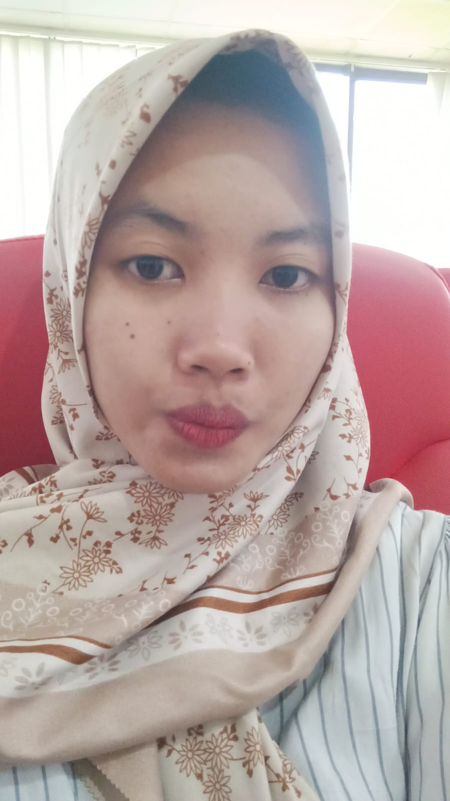
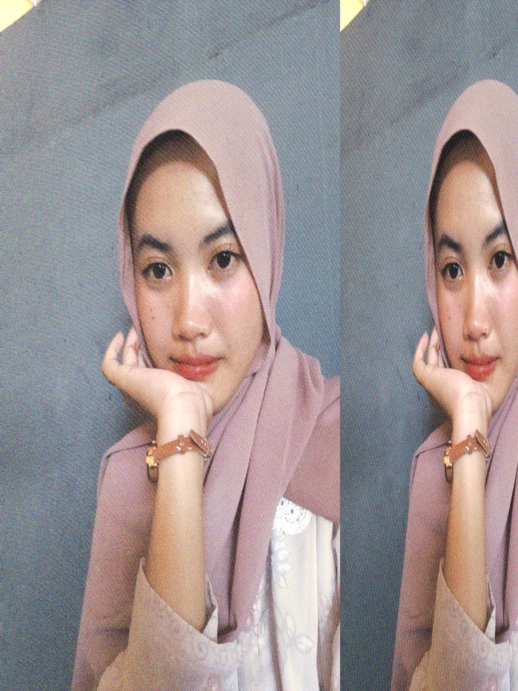
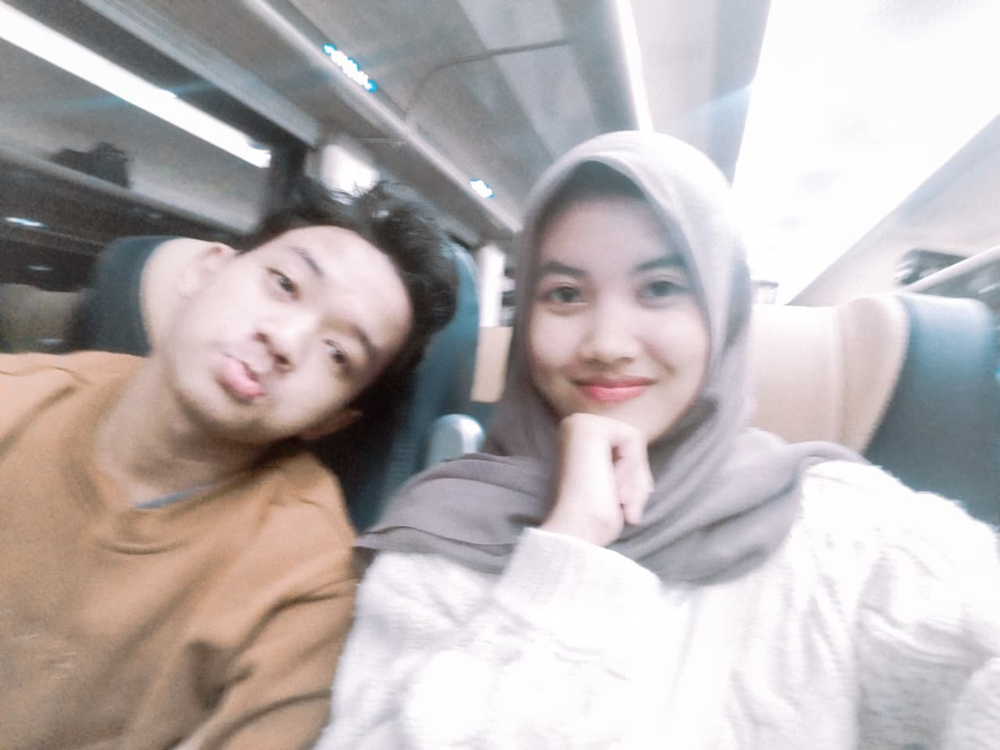

selamat ulang tahun yaa 🎂
mayaaaa, sayangkuuu, cantikkkkkk
yang tanpa sadar bikin hari-hariku lebih seru.
semoga panjang umurr, sehat selaluu, jadi mayaa yang baikkk
tetap bertahan sama akuu yaaa dan...
semoga hubungan kita bisa sampe lamaa 💖
Happy Birthday 🎂


